Prática 2 - Introdução à Análise de Expressão Diferencial com RNA-Seq em R
IB/UNESP Rio Claro
7 de setembro de 2026
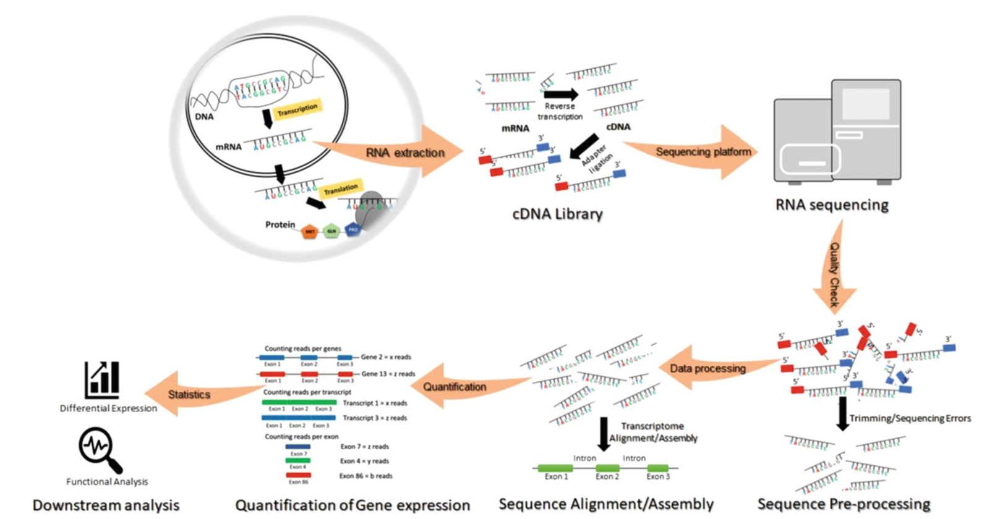
Bharti and Grimm, 2021.
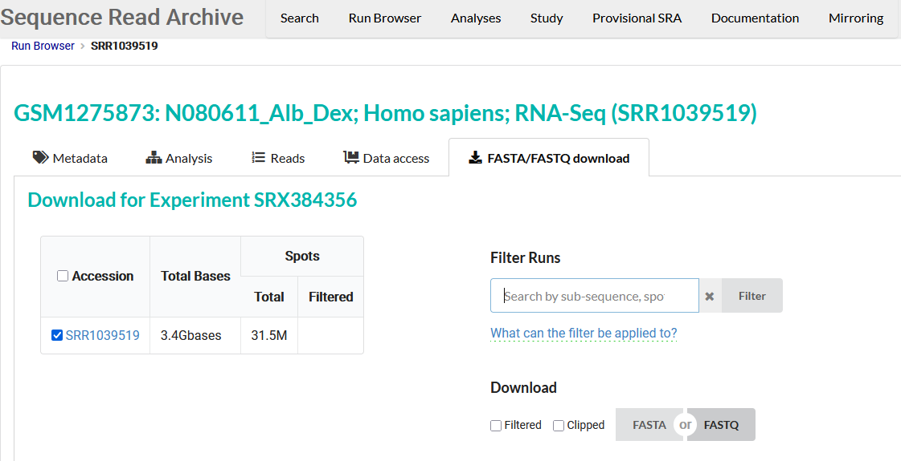
https://trace.ncbi.nlm.nih.gov/Traces/index.html?view=run_browser&acc=SRR1039519&display=download (acesso em 29/07/2026)
Usando fasterq-dump : 3.4.1
SRR6357082 Rap1-AID degron no induction polyA RNA-Seq biological replicate 1
SRR6357083 Rap1-AID degron no induction polyA RNA-Seq biological replicate 2
SRR6357084 Rap1-AID degron no induction polyA RNA-Seq biological replicate 3
SRR6357085 Rap1-AID degron induction 2 hours polyA RNA-Seq biological replicate 1
SRR6357086 Rap1-AID degron induction 2 hours polyA RNA-Seq biological replicate 2
SRR6357087 Rap1-AID degron induction 2 hours polyA RNA-Seq biological replicate 3FastQC v0.12.1
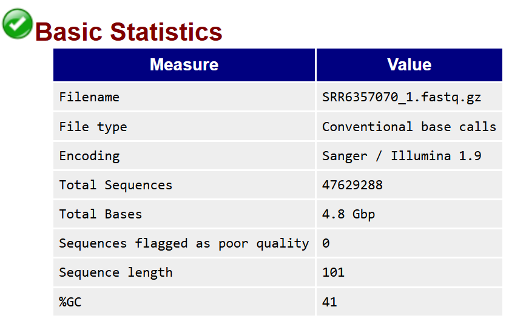
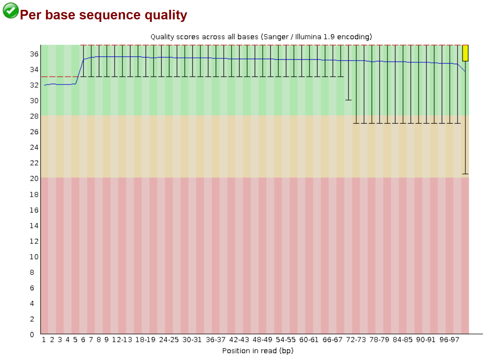
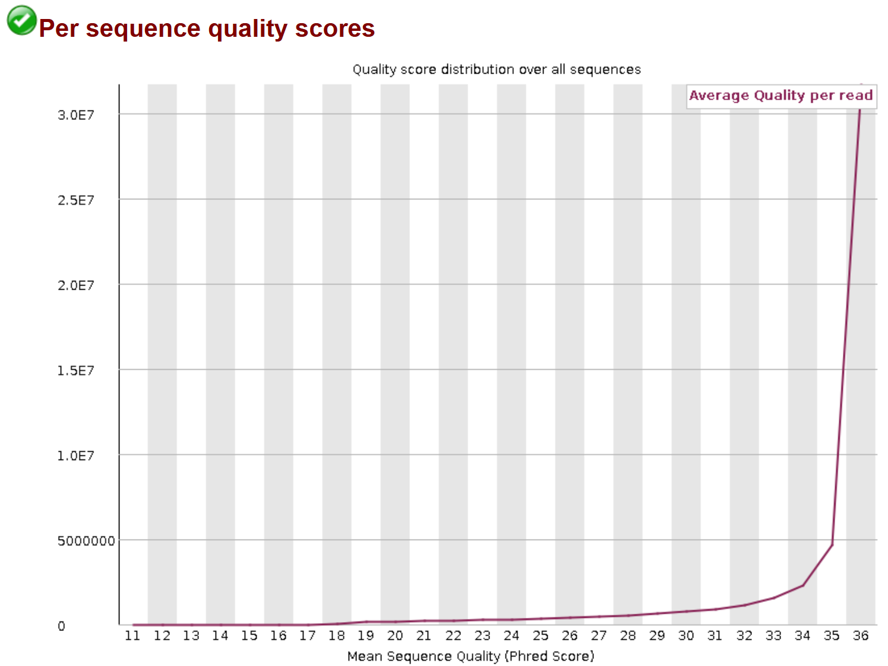
fastp 1.3.6
fastp --in1 SRR6357070_1.fastq.gz --in2 SRR6357070_2.fastq.gz \
--out1 SRR6357070_1_clean.fastq.gz --out2 SRR6357070_2_clean.fastq.gz \
--verbose --adapter_sequence AGATCGGAAGAGC --adapter_sequence_r2 AGATCGGAAGAGC \
--qualified_quality_phred 20 --length_required 25 --thread 8 \
--html SRR6357070_fastp.htmlfor SAMPLE in SRR6357071 SRR6357072 SRR6357073 SRR6357074 SRR6357075 SRR6357076 SRR6357077 SRR6357078 SRR6357079 SRR6357080 SRR6357081 SRR6357082 SRR6357083 SRR6357084 SRR6357085 SRR6357086 SRR6357087
do
fastp --in1 "$SAMPLE"_1.fastq.gz --in2 "$SAMPLE"_2.fastq.gz \
--out1 "$SAMPLE"_1_clean.fastq.gz --out2 "$SAMPLE"_2_clean.fastq.gz \
--verbose --adapter_sequence AGATCGGAAGAGC --adapter_sequence_r2 AGATCGGAAGAGC \
--qualified_quality_phred 20 --length_required 25 --thread 8 \
--html "$SAMPLE"_fastp.html
done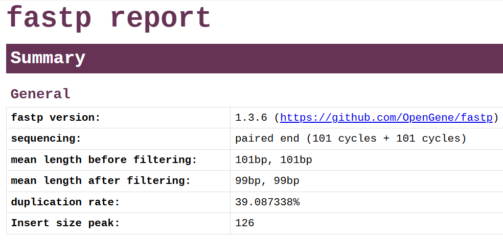
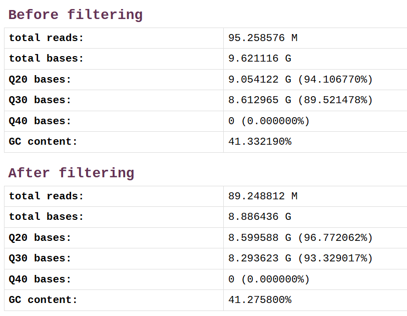
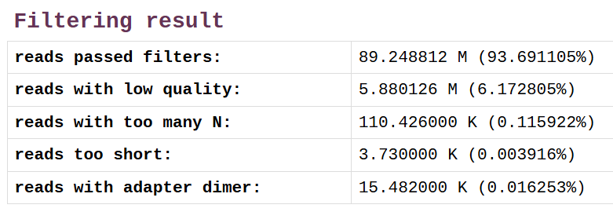
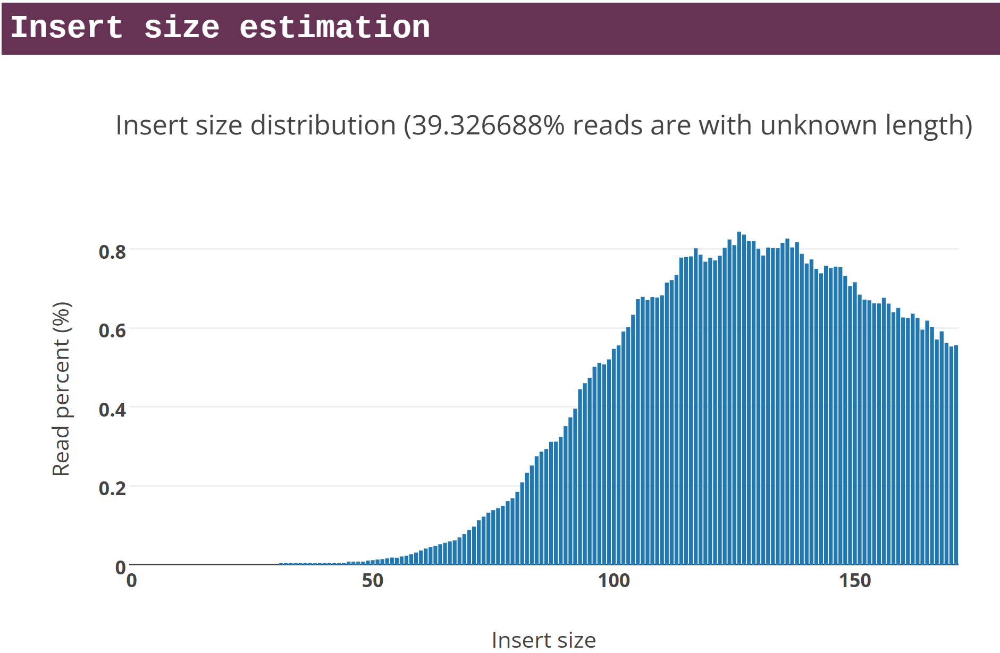
Quantificando o rRNA e removendo das próximas etapas com ribodetector 0.3.3.
Usando a versão do ribodetector que não usa GPU (ribodetector_cpu):
Usando a versão do ribodetector que não usa GPU (ribodetector_cpu):
#!/bin/bash
CONDA_BASE=$(conda info --base)
source "$CONDA_BASE/etc/profile.d/conda.sh"
conda activate ribodetector
for SAMPLE in SRR6357071 SRR6357072 SRR6357073 SRR6357074 SRR6357076 SRR6357077 SRR6357078 SRR6357079 SRR6357080 SRR6357081 SRR6357082 SRR6357083 SRR6357084 SRR6357085
do
ribodetector_cpu -l 100 -t 6 -i "$SAMPLE"_1_clean.fastq.gz "$SAMPLE"_2_clean.fastq.gz \
-o "$SAMPLE"_1.nonrrna.fastq.gz "$SAMPLE"_2.nonrrna.fastq.gz \
-e rrna --chunk_size 256 --log "$SAMPLE"_ribodetector.log
done
conda deactivatehisat2_extract_exons.py GCF_000146045.2_R64_genomic.gtf > GCF_000146045.2_R64_genomic.exons
hisat2_extract_splice_sites.py -v GCF_000146045.2_R64_genomic.gtf > GCF_000146045.2_R64_genomic.ssSaída:
Another GFF Analysis Toolkit (AGAT) - Version: v0.8.0
Gerando um arquivo BED12:
infer_experiment.py 5.05
infer_experiment.py -i SRR6357070_hisat2.sam -r ../ref_genome/GCF_000146045.2/GCF_000146045.2_R64_genomic.bed -s 400000Esperado para Illumina TruSeq: 1+-,1-+,2++,2--:
Reading reference gene model ../ref_genome/GCF_000146045.2/GCF_000146045.2_R64_genomic.bed ... Done
Loading SAM/BAM file ... Total 400000 usable reads were sampled
This is PairEnd Data
Fraction of reads failed to determine: 0.0034
Fraction of reads explained by "1++,1--,2+-,2-+": 0.0072
Fraction of reads explained by "1+-,1-+,2++,2--": 0.9894bam_stat.py 5.05
Load BAM file ... Done
#==================================================
#All numbers are READ count
#==================================================
Total records: 125143097
QC failed: 0
Optical/PCR duplicate: 0
Non primary hits 36838107
Unmapped reads: 3106438
mapq < mapq_cut (non-unique): 8669981
mapq >= mapq_cut (unique): 76528571
Read-1: 38250123
Read-2: 38278448
Reads map to '+': 38263663
Reads map to '-': 38264908
Non-splice reads: 74866883
Splice reads: 1661688
Reads mapped in proper pairs: 75413158
Proper-paired reads map to different chrom:0hisat2 -q --met-file SRR6357070_hisat2.metrics -p 8 --rna-strandness RF \
-x ../ref_genome/GCF_000146045.2/GCF_000146045.2_R64_genomic.fna \
-1 ../yeast_data/SRR6357070_1.nonrrna.fastq.gz \
-2 ../yeast_data/SRR6357070_2.nonrrna.fastq.gz -S SRR6357070_hisat2.sam*Quantificação com HTSeq
*Extra: análise de contaminações com o banco de dados PlusPFP
RSEM-1.3.3. Instalação com make, seguindo o guia no [Github] (ttps://github.com/deweylab/RSEM)
Executáveis para Linux 64x foram baixados do repositório do Github.
*O ideal seria fazer a quantificação com os dados após a limpeza do ribossomal (como no exemplo acima).
Salmon 2.0
Usando transcritos gerados com RSEM:
*O ideal seria fazer a quantificação com os dados após a limpeza do ribossomal (como no exemplo acima).
#!/bin/bash
CONDA_BASE=$(conda info --base)
source "$CONDA_BASE/etc/profile.d/conda.sh"
conda activate salmon_env
for SAMPLE in SRR6357070 SRR6357071 SRR6357072 SRR6357073 SRR6357074 SRR6357075 SRR6357076 SRR6357077 SRR6357078 SRR6357079 SRR6357080 SRR6357081 SRR6357082 SRR6357083 SRR6357084 SRR6357085 SRR6357086 SRR6357087
do
#ls ../yeast_data/"$SAMPLE"_1_clean.fastq.gz ../yeast_data/"$SAMPLE"_2_clean.fastq.gz
salmon quant -l A --index index/ --output "$SAMPLE"_quant \
-1 ../yeast_data/"$SAMPLE"_1_clean.fastq.gz \
-2 ../yeast_data/"$SAMPLE"_2_clean.fastq.gz \
-p 2 --numBootstraps 100 --seqBias --gcBias
done
conda deactivateSelecionando a linhagem Rap1-AID degron com e sem indução (2 horas) e sequenciamento poliA (SRR6357082, SRR6357083, SRR6357084, SRR6357085, SRR6357086 e SRR6357087), para a geração de matriz de contagens:
Pacote para testes de expressão diferencial.
Pacote para estimar o tamanho do efeito “encolhido”.
O apeglm (Zhu, Ibrahim, e Love, 2018) é recomendado no guia oficial do DESeq2.
Pacote para
Pacote para testes de expressão diferencial.
Exercício · 5 minutos
Nextflow nf-core/rnaseq
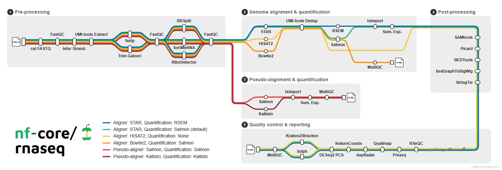
Imagem do repositório nf-core/rnaseq
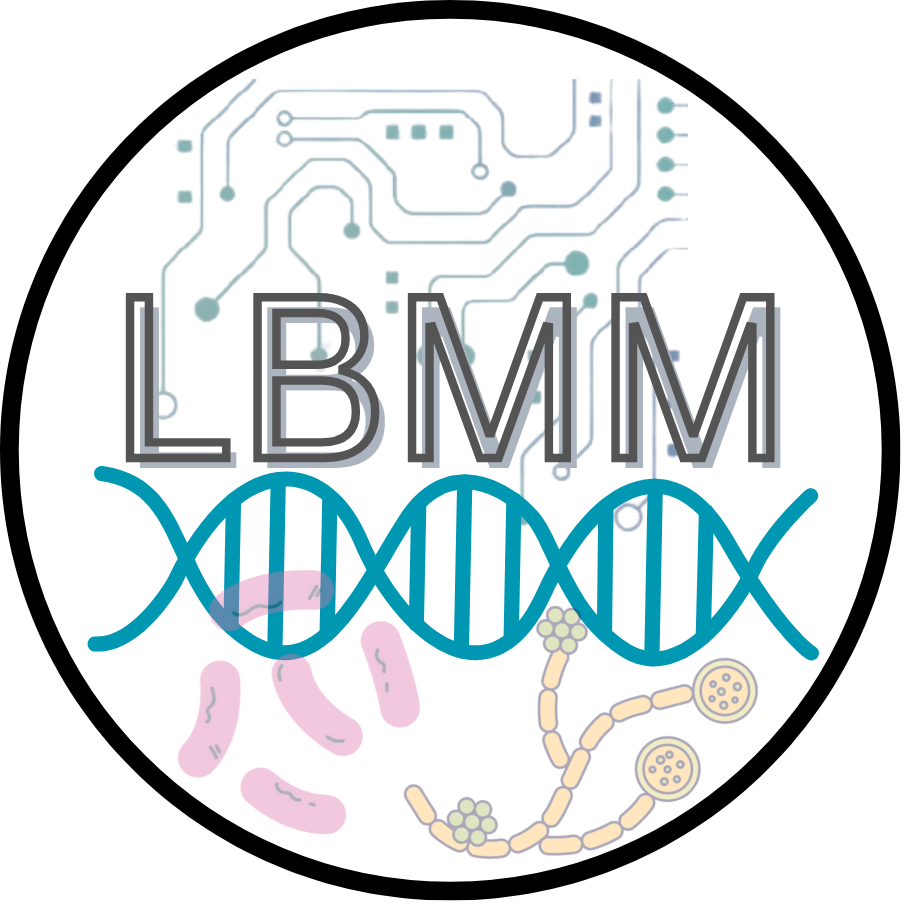
Prática 2 - Introdução à Análise de Expressão Diferencial com RNA-Seq em R